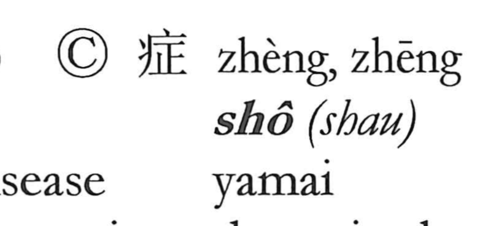

症

Kun: | On: sho
symptom ・ syndrome ・ disease condition
Explanation
A later phono-semantic coinage, 症 sets the sickness radical 疒 to mark the medical domain and uses 正 as the phonetic, giving the on reading sho. It names the condition or manifestations of an illness—that is, symptoms. In earlier texts this sense was expressed with 証 or 徴, characters meaning proof or sign; 症 was introduced to restrict that idea specifically to indications of disease. As a modern vulgar form, it is not attested in early literature.